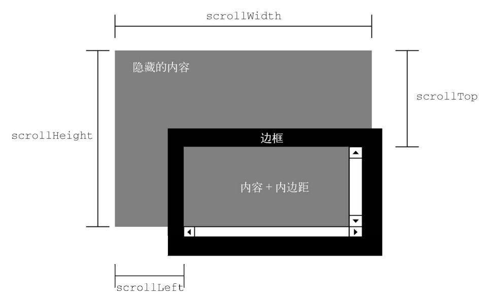
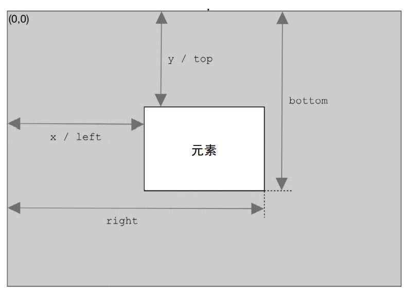

<!DOCTYPE html>
<html lang="en">
<head>
    <meta charset="UTF-8">
    <title>DOM2 和 DOM3</title>
    <link rel="stylesheet" href="../HTML/CSS/style.css">
    <style>
        div {
            line-height: 5px;
        }
    </style>
    <script>
        /*
        DOM1(DOM Level 1) 主要定义了 HTML 和 XML 文档的底层结构
        DOM2(DOM Level 2) 和 DOM3( DOM Level 3) 在这些结构之上加入更多交互能力，提供了更高级的 XML 特性

        按照模块划分，可以分成如下几个模块
        ①DOM Core：在 DOM1 核心部分的基础上，为节点增加方法和属性
        ②DOM Views：定义基于样式信息的不同视图
        ③DOM Events：定义通过事件实现 DOM 文档交互
        ④DOM Style：定义以编程方式访问和修改 CSS 样式的接口
        ⑤DOM Traversal and Range：新增遍历 DOM 文档及选择文档内容的接口
        ⑥DOM HTML：在 DOM1 HTML 部分的基础上，增加属性、方法和新接口
        ⑦DOM Mutation Observers：定义基于 DOM 变化触发回调的接口。这个模块是 DOM4 级模块，用于取代 Mutation Events

        一、DOM 的演进
         1.1 DocumentType 的变化
         DocumentType 新增了三个属性 publicId、systemId 和 internalSubset
         publicId 和 systemId 属性表示文档类型声明中有效但无法使用 DOM1 API 访问的数据
         internalSubset 属性用于访问文档类型声明中可能包含的额外定义

         1.2 Document 的变化
         importNode() 从其他文档获取一个节点并导入到当前文档中
         defaultView 属性指向拥有当前文档的窗口的指针
         document.implementation 对象新增两个方法 createDocumentType() 和 createDocument()
         document.implementation 的 createHTMLDocument() 方法可以创建一个完整的 HTML 文档

         1.3 Node 的变化
         新增两个用于比较节点的方法 isSameNode() 和 isEqualNode()
         节点相同，说明两个节点引用同一个对象，相同的节点必然相等
         节点相等，说明两个节点类型相同，拥有相同的属性和子节点。相等的节点不一定相同

        二、样式
        DOM2 Style 为三种应用样式的方法都提供了 API

            2.1 内联样式
            任何支持 CSS 内联样式的 HTML 元素在 JavaScript 中都有一个对应的 style 属性，这个属性是 CSSStyleDeclaration 类型的对象
            包含所有设置在该元素上的内联样式，但不包含内部样式表和外部样式表设置在该元素上的样式
            CSS 属性名有连字符 - ，在 JavaScript 中用小驼峰代替连字符

            CSS 属性名             JavaScript 属性名
            color                  style.color
            background-color       style.backgroundColor
            list-style-type        style.listStyleType
            float(为关键字)         cssFloat

            读写该元素的内联样式 <div style="background-color: red; font-size: 18px;"></div>

            const myDiv = document.body.firstElementChild;
            console.log(myDiv.style.backgroundColor); //red
            console.log(myDiv.style.fontSize); //18px
            console.log(myDiv.style.borderWidth); //若元素上没有设置该属性，返回默认值 或 undefine 或空字符串
            myDiv.style.borderWidth = "2px"; //设置元素内联样式
            console.log(myDiv.style.borderWidth); //2px

            1) 属性和方法
            这些属性和方法提供了元素 style 属性的一些信息

            cssText，包含 style 属性中的 CSS 代码
            length，只读，该元素内联样式中 CSS 属性数量
            parentRule，只读，返回 CSSRule 对象
            getPropertyPriority(propertyName)，若指定属性使用了 !important ，则返回 !important，否则返回空字符串
            getPropertyValue(propertyName)，通过 CSS 属性名获取其属性值
            item(index)，索引为 index 的 CSS 属性名（不是 JavaScript 属性名）
            removeProperty(propertyName)，删除指定属性
            setProperty(propertyName, value, priority)，设置指定属性

            const myDiv = document.body.firstElementChild;
            console.log(myDiv.style.cssText); //background-color: red; font-size: 18px;
            console.log(myDiv.style.length); //2
            console.log(myDiv.style.parentRule); //null
            console.log(myDiv.style.getPropertyPriority("background-color")); //空字符串
            console.log(myDiv.style.getPropertyValue("font-size")); //18px
            console.log(myDiv.style.item(1)); //font-size

            2) 计算样式
            document.defaultView.getComputedStyle() 返回元素的只读的计算样式
            计算样式是该元素在页面上呈现的效果，是内联样式、内部样式表和外部样式表共同作用的结果

            2.2 内部和外部样式表
            CSSStyleSheet 类型继承自 StyleSheet 类型，是一个通用的样式表类型，表示任何在 HTML 中定义的 CSS 样式表，包括通过 <link> 和 <style> 定义的内部和外部样式表
            CSSStyleSheet 类型的对象是只读的（disabled 属性除外）

            disabled，表示样式表是否被禁用
            href，返回用 <link> 引入的样式表的 URL，否则返回 null
            media，样式表支持的媒体类型集合。若样式表支持所有媒体类型，返回空列表
            ownerNode，指向拥有当前样式表的节点，<link> 或 <style> 元素
            parentStyleSheet，若当前样式表通过 @import 被包含在另一个样式表中，指向导入它的样式表
            title，ownerNode 的 title 属性
            type，表示样式表的类型，对于样式表来说，是 "text/css"
            cssRules，当前样式表包含的样式规则集合
            ownerRule，指向通过 @import 的导入规则，否则返回
            deleteRule(index)，删除 cssRules 中指定位置的规则
            insertRule(rule, index)，在指定位置向 cssRules 中插入规则
            document.styleSheets 返回该文档可用的样式表集合，直接通过 link 或 style 元素的 sheet 属性也能获得对应的 CSSStyleSheet 对象

            1) CSS 规则
            CSSRule 类型表示样式表中的一条规则（样式表中一个 {} 代表一个规则），CSSStyleRule 类型继承它，表示样式表中的样式信息

            cssText，返回整条规则的只读文本形式
            parentRule，若此条规则被其他规则包含，指向其他规则，否则为 null
            parentStyleSheet，返回当前规则的样式表
            selectorText，返回规则的选择器文本
            style，返回 CSSStyleDeclaration 对象，用于读写当前规则的样式
            type，对于样式规则始终为 1

            const list = document.styleSheets; //获取样式表集合
            const firstRule = list.item(0).cssRules.item(0); //获取第一个样式表中的第一个规则
            console.log(firstRule.cssText); //p { color: black; font-size: 50px; }
            console.log(firstRule.selectorText); //p
            console.log(firstRule.parentStyleSheet); //CSSStyleSheet 对象
            console.log(firstRule.style.color); //black
            firstRule.style.fontSize = "18px";

            2) 创建规则
            list.item(0).insertRule("body { background-color: silver }", 0); //在样式表首位插入一条规则

            3) 删除规则
            list.item(0).removeRule(0);

            2.3 元素尺寸

            1) 偏移尺寸
            包含元素在屏幕上占据的所有视觉空间，包括其所有内容、内边距、边框和滚动条（不包括外边距）
            所有偏移尺寸属性都是只读的

            offsetWidth，元素在水平方向上占用的像素尺寸
            offsetHeight，元素在垂直方向上占用的像素尺寸
            offsetLeft，元素左边框外侧距离包含元素左边框内侧的像素数
            offsetTop，元素上边框外侧距离包含元素上边框内侧的像素数
            offsetParent 不一定是父节点，可能是祖先节点

            offsetParent
            _______________________________________________________________________
            |                               ↑                                     |
            |                               |                                     |
            |                     offsetTop |                                     |
            |                               |                                     |
            |           ____________________↓__________________                   |
            |           |      ————————————————————————       | ↑                 |
            |           |      |        ______         |      | |                 |
            |offsetLeft |      |       |      |        |      | |                 |
            |←---------→| 边框 | 内边距 | 内容 | 内边距 | 边框 | | offsetHeight    |
            |           |      |       |______|        |      | |                 |
            |           |      |_______________________|      | |                 |
            |           |—————————————————————————————————————| ↓                 |
            |           ←------------offsetWidth--------------→                   |
            |—————————————————————————————————————————————————————————————————————|

            2) 客户端尺寸
            元素的客户端尺寸包含元素内容和内边距，不包括边框、外边距和滚动条
            客户端尺寸是只读的

            clientHeight，返回元素客户端高度
            clientWidth，返回元素的客户端宽度

            document.documentElement.clientHeight; //获取页面视口高度
            document.documentElement.clientWidth; //获取页面视口宽度

            offsetParent
            __________________________________________________________
            |               _______________________________________  |
            |           ___ |      ————————————————————————       |  |
            |            ↑  |      |        ______         |      |  |
            |            |  |      |       |      |        |      |  |
            |clientHeight|  | 边框 | 内边距 | 内容 | 内边距 | 边框 |  |
            |            |  |      |       |______|        |      |  |
            |           _↓_ |      |_______________________|      |  |
            |               |—————————————————————————————————————|  |
            |                     ←-----clientWidth-------→          |
            |————————————————————————————————————————————————————————|

            3) 滚动尺寸
            图片见 

            scrollHeight，没有滚动条出现时，元素内容的总高度，此时等于 clientHeight
            scrollWidth，没有滚动条出现时，元素内容的总宽度，此时等于 clientWidth
            scrollLeft，内容区左侧隐藏的像素数，设置以滚动元素
            scrollTop，内容区顶部隐藏的像素数，设置以滚动元素

            document.documentElement.scrollHeight; //获取页面总高度，有垂直滚动条时，页面高度永远大于页面视口高度
            document.documentElement.scrollWidth; //获取页面总宽度，有水平滚动条时，页面宽度永远大于页面视口宽度

            4) 确定元素尺寸
            图片见 

            每个元素都有 getBoundingClientRect() 方法，返回一个 DOMRect 对象
            包含 left, top, right, bottom, height, width 六个属性，表示元素在页面中相对视口的位置

        三、遍历
        从某个起点开始执行对 DOM 结构的深度优先遍历

            3.1 NodeIterator
            document.createNodeIterator() 创建 NodeIterator 对象，传入三个参数
                ①root，表示遍历的根节点
                ②whatToShow，数值代码，表示应该访问哪些节点
                    NodeFilter.SHOW_ALL，所有节点
                    NodeFilter.SHOW_ELEMENT，元素节点
                    NodeFilter.SHOW_ATTRIBUTE，属性节点。由于 DOM 的结构，实际上用不上
                    NodeFilter.SHOW_TEXT，文本节点
                    NodeFilter.SHOW_CDATA_SECTION，CData 区块节点。不是在 HTML 页面中使用的
                    NodeFilter.SHOW_ENTITY_REFERENCE，实体引用节点。不是在 HTML 页面中使用的
                    NodeFilter.SHOW_ENTITY，实体节点。不是在 HTML 页面中使用的
                    NodeFilter.SHOW_PROCESSING_INSTRUCTION，处理指令节点。不是在 HTML 页面中使用的
                    NodeFilter.SHOW_COMMENT，注释节点
                    NodeFilter.SHOW_DOCUMENT，文档节点
                    NodeFilter.SHOW_DOCUMENT_TYPE，文档类型节点
                    NodeFilter.SHOW_DOCUMENT_FRAGMENT，文档片段节点。不是在 HTML 页面中使用的
                    NodeFilter.SHOW_NOTATION，记号节点。不是在 HTML 页面中使用的
                ③filter, NodeFilter 对象或函数，表示是否接收或跳过特定节点，NodeFilter 对象有一个 acceptNode(node) 方法
                该方法中接收节点返回 NodeFilter.FILTER_ACCEPT，不接收（跳过，访问下一个节点）返回 NodeFilter.FILTER_SKIP

            NodeIterator 对象主要的两个方法 nextNode() 和 previousNode()
            nextNode() 在深度优先遍历中前进一步，previousNode() 后退一步
            第一次调用 nextNode() 时返回根节点，遍历到 DOM 树最后一个节点时，返回 null
            第一次调用 previousNode() 时返回 null


            const whatToShow = NodeFilter.SHOW_ELEMENT | NodeFilter.SHOW_TEXT; //访问元素节点或文本节点
            const filter = { // 用 NodeFilter 里的 acceptNode() 方法过滤节点
                acceptNode(node) {
                    if (node.nodeName.toLowerCase() === "p" ||node.nodeName ==="#text") { //只接收元素节点中的 p 元素，接收所有文本节点
                        return NodeFilter.FILTER_ACCEPT;
                    } else {
                        return NodeFilter.FILTER_SKIP;
                    }}}
            let iterator = document.createNodeIterator(document, whatToShow, filter); //创建迭代器对象
            let next = iterator.nextNode(); //获取根节点，准备开始遍历
            while (next !== null) {
                console.log(next.nodeName);
                next = iterator.nextNode();
            }
            // #text(14)
            // P
            // #text(2)

            3.2 TreeWalker
            TreeWalker 是 NodeIterator 的高级版，除了包含同样的 nextNode()、previousNode()方法，还添加了在 DOM 结构中向不同方向遍历的方法

            parentNode()，遍历到当前节点的父节点
            firstChild()，遍历到当前节点的第一个子节点
            lastChild()，遍历到当前节点的最后一个子节点
            nextSibling()，遍历到当前节点的下一个同胞节点
            previousSibling()，遍历到当前节点的上一个同胞节点

            通过 document.createTreeWalker() 创建 TreeWalker 对象，传入和 NodeIterator 构造函数一样的三个参数

            新增的 NodeFilter.FILTER_REJECT 表示跳过该节点及其之后的整个子树
            新增的 currentNode 属性可以改变接下来遍历的起点

        */


    </script>
</head>
<body>
<div style="background-color: red; font-size: 18px;"></div>


</body>
<script>


</script>
</html>